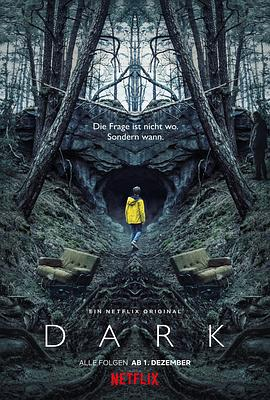

暗黑 第一季 / Dark Season 1
又名：暗(港/台) / 暗黑世界 / 黑暗世界 / 黑暗
尹同学洗脑推荐，前两集一脸懵逼，后面感觉题材还是很有意思的。最郁闷的是，画面真的好黑暗，我早上上班火车上看都很难看清楚画面
作品信息
| 导演 | 巴伦·博·欧达尔 |
| 编剧 | 巴伦·博·欧达尔 / 扬特耶·弗里泽 |
| 主演 | 奥利弗·马苏奇 / 卡罗莉内·艾希霍恩 / 耶迪斯·特里贝尔 / 路易斯·霍夫曼 / 安德烈亚斯·皮特斯柯曼 / 塔蒂娅·赛布特 / 内尔·特雷波斯 / 安吉拉·温科勒 / 彼得·施耐德 / 玛雅·舍内 / 斯蒂芬·坎普沃斯 / 黛博拉·考夫曼 / 达恩·伦纳德·利布伦茨 / 丽莎·维卡里 / 保罗·勒克斯 / 赫尔曼·拜尔 / 莫里茨·杰恩 / 沃尔特·克雷耶 / 克里斯蒂安·斯泰尔 / 利奥波德·霍尔农 / 克里斯蒂安·佩措尔德 / 安妮·拉特-波利 / 莉迪亚·玛丽亚·马基德斯 |
| 类型 | 科幻 / 悬疑 |
| 制片国家/地区 | 德国 |
| 语言 | 德语 |
| 首播 | 2017-12-01(美国) |
| 季数 | 1 |
| 集数 | 10 |
| 单集片长 | 60分钟 |
| IMDb | tt5753856 |
说过什么
2019-12-08 11:44:02
看过 · 时间来自广播，短评来自标记页
尹同学洗脑推荐，前两集一脸懵逼，后面感觉题材还是很有意思的。最郁闷的是，画面真的好黑暗，我早上上班火车上看都很难看清楚画面
2019-12-07 21:24:03
广播 · 在看
最后一次看到是 2026-08-01T11:05:48+10:00 · 豆瓣原页